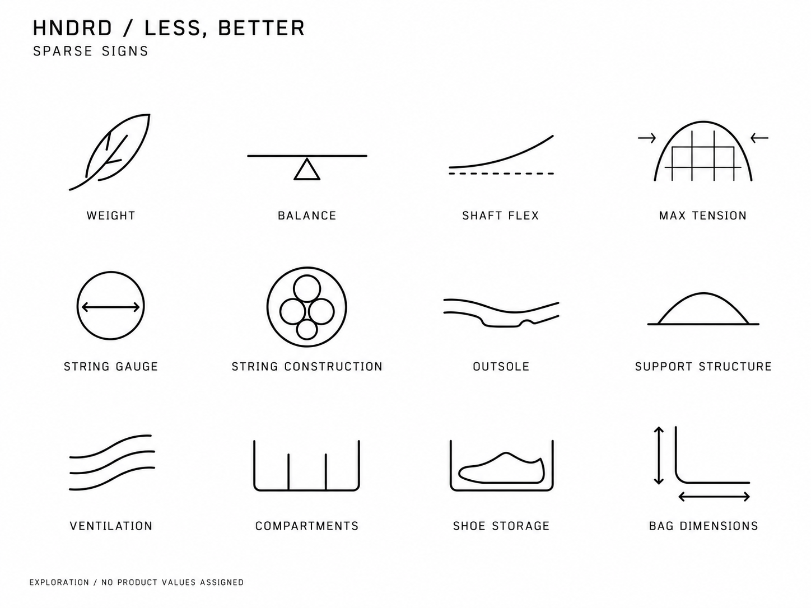
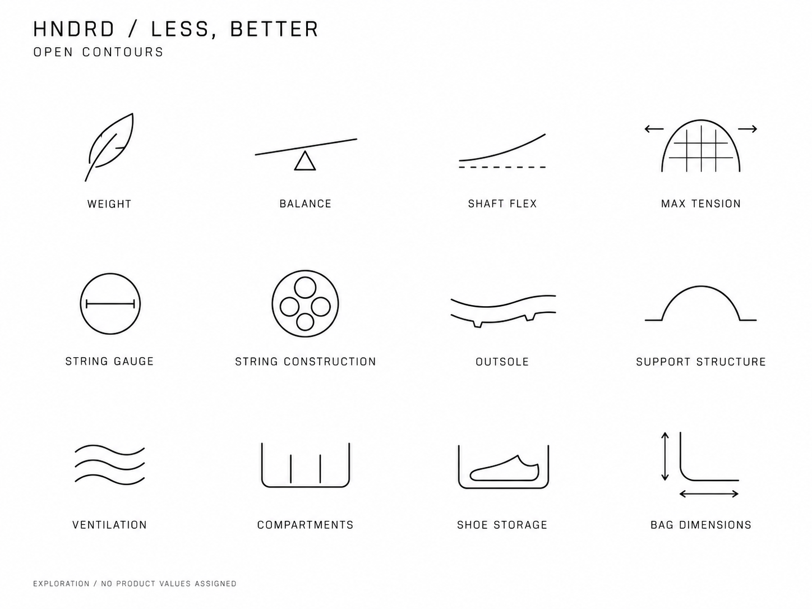
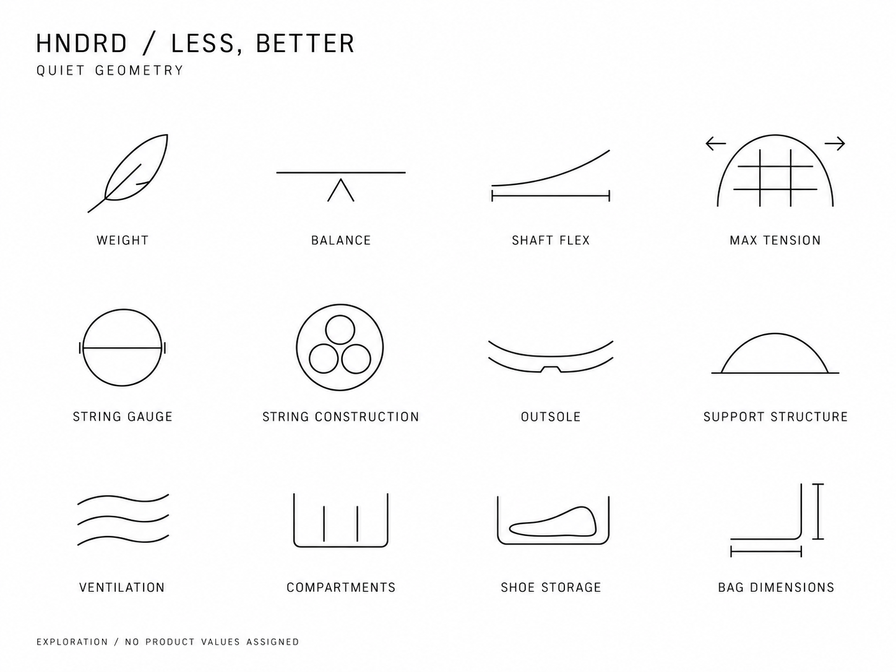
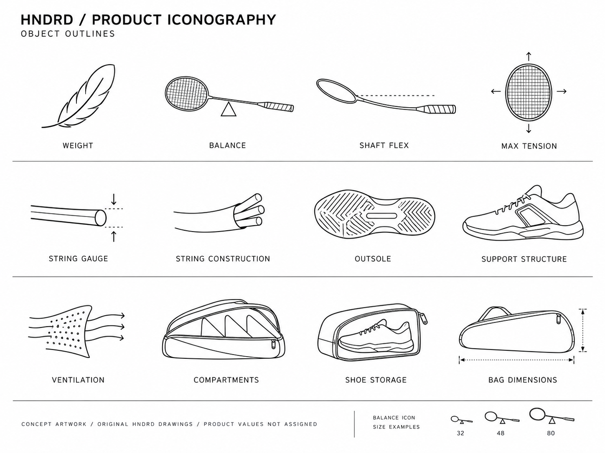
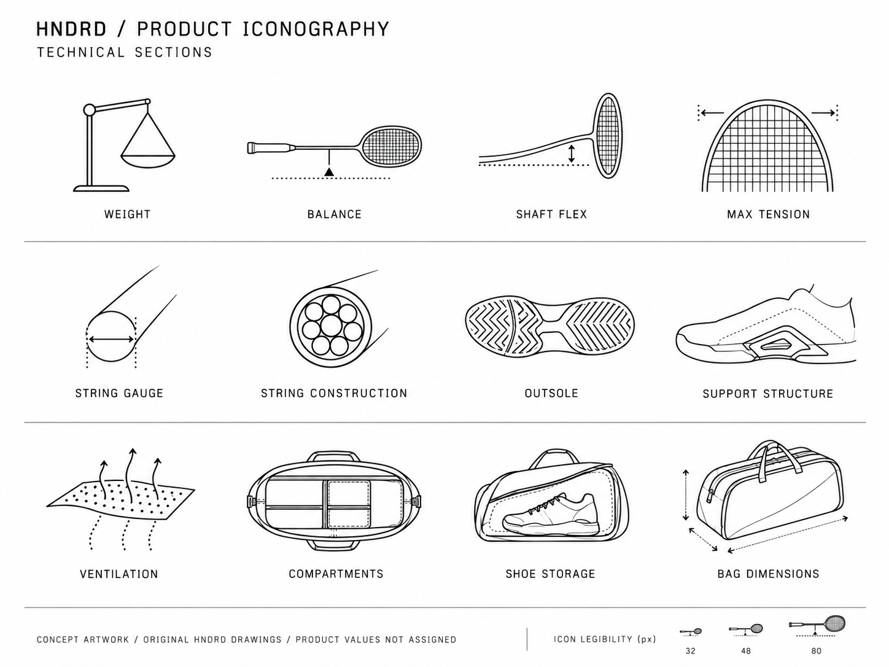
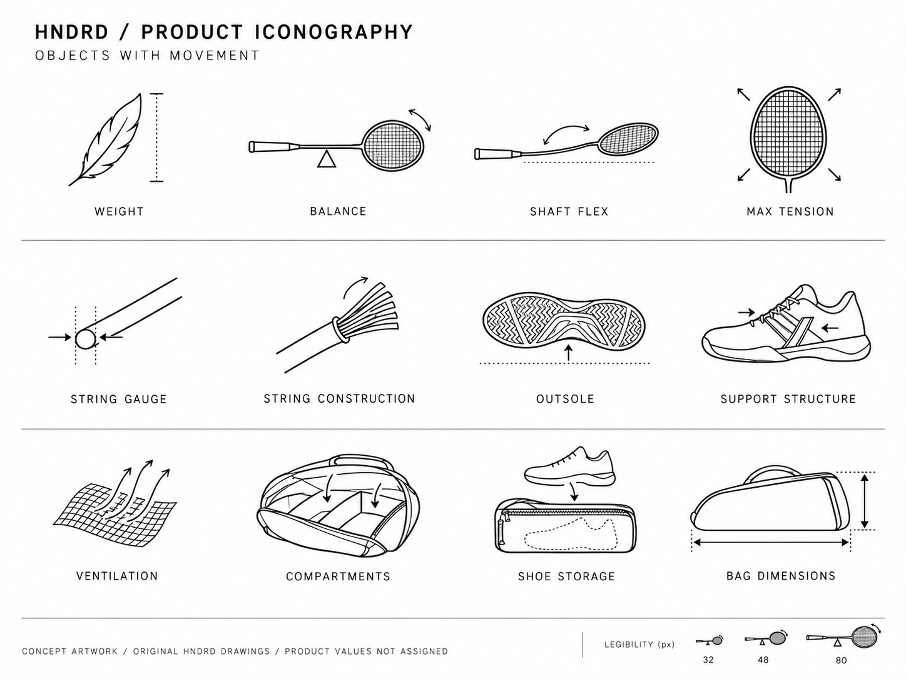
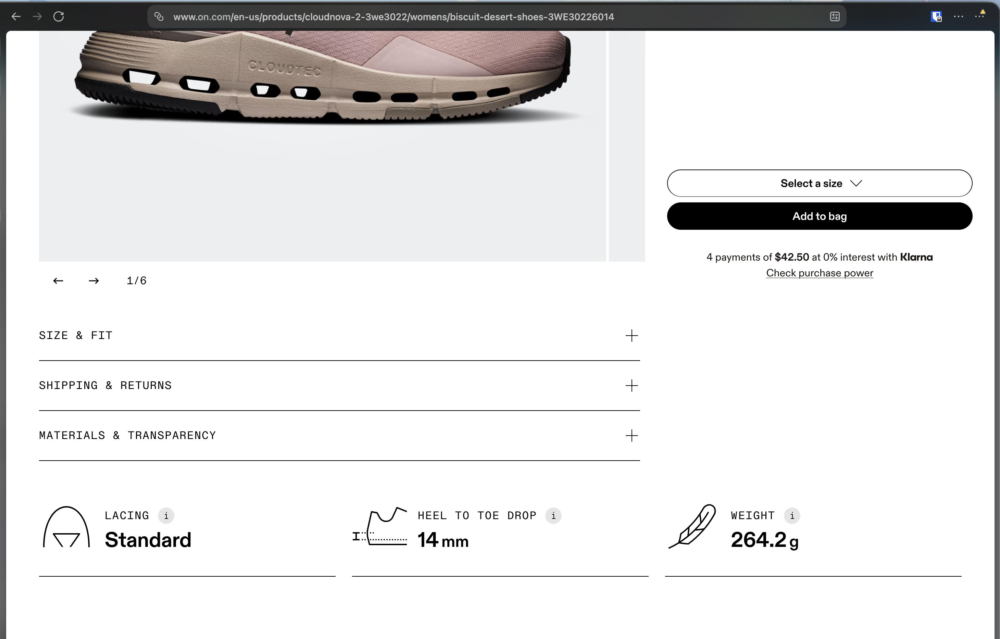

Weight
Cloudnova 2; shared across footwear, bags and socks
A literal feather makes an abstract attribute immediately recognisable.
Original SVG ↗HNDRD / Design research / 23 October 2026
Twelve On references. Three revised boards of minimal, abstract attribute signs. Gauge, string construction and maximum tension remain the strongest starting points.
Revision 2 / Minimal and abstract
Each board explores weight, balance, shaft flex, maximum tension, string gauge, construction, outsole, support structure, ventilation, compartments, shoe storage and bag dimensions. Labels name attributes; no values or features have been assigned to individual products.



Raster concept explorations, awaiting your feedback. Exact pixel-size checks and production SVG work remain pending. Read the revised brief and critique.
Retained for comparison only. The minimal, abstract direction above supersedes these whole-object illustrations.



Reference collection / On originals
Light black linework, specific objects, simple guides and plenty of white space. These are the actual downloaded On SVG files, shown at 32, 48 and 80 CSS pixels. They are research references, not HNDRD production assets.
Cloudnova 2; shared across footwear, bags and socks
A literal feather makes an abstract attribute immediately recognisable.
Original SVG ↗Cloudnova 2; Cloudsurfer 2
A cropped shoe opening keeps the drawing simple and explains the fastening.
Original SVG ↗Cloudnova 2; Cloudsurfer 2; Cloudultra 3; THE ROGER Pro 3
A shoe section and measurement guide explain a dimension.
Original SVG ↗Cloudsurfer 2
Reference for expressing a product characteristic through a small diagram.
Original SVG ↗Cloudultra 3
A contextual environment can explain intended use.
Original SVG ↗Cloudultra 3
Reference for construction/feel visualisation; On's scale does not transfer to HNDRD.
Original SVG ↗Cloud X 4
Reference for a labelled support classification, not a HNDRD rating.
Original SVG ↗Cloud X 4
Compare with standard lacing: variants retain one visual language.
Original SVG ↗THE ROGER Pro 3
Intended playing surface becomes a recognisable spatial diagram.
Original SVG ↗Performance-T; Performance Jacket
Garment/fit diagram rather than a generic apparel category symbol.
Original SVG ↗Performance-T; Essential Shorts text reference
Environmental condition icon; do not assume HNDRD climate classifications.
Original SVG ↗Performance Jacket
Precise attribute icon; waterproof, resistant and repellent are distinct.
Original SVG ↗
Footwear / Apparel / Accessories
| Category | Product source | Evidence |
|---|---|---|
| Everyday footwear | Cloudnova 2 ↗ | Lacing · heel-to-toe drop · weight |
| Road running | Cloudsurfer 2 ↗ | Smooth ride · lacing · drop · weight |
| Trail running | Cloudultra 3 ↗ | Technical terrain · cushioning · drop · weight |
| Training | Cloud X 4 ↗ | Stability · star lacing |
| Tennis | THE ROGER Pro 3 ↗ | Hard court · drop · weight |
| Apparel | Performance-T ↗ | Fit · warm conditions; shared weight asset in source |
| Outerwear | Performance Jacket ↗ | Fit · waterproofness; shared weight asset in source |
| Shorts | Essential Shorts ↗ | Warm climate in page text; SVG extraction unavailable |
| Bags | Cargo Pack 60L ↗ | Shared weight asset in source; storage described in text |
| Backpacks | Speed Pack 24L Elite ↗ | Text reference for storage and dimensions; no distinct icons verified |
| Socks | Performance Run Sock Mid ↗ | Shared weight asset in source; construction described in text |
A source asset reference does not establish visible rendering at every viewport. No additional live browser screenshots were captured; the user-supplied screenshot is the captured page reference.
Catalogue-led / Phased coverage
Start with the four product families in phase 01, then extend shared visual meanings across the full range. Every final product assignment needs model-specific evidence.
| Phase | Product family | Attribute subjects | Drawing and content guidance |
|---|---|---|---|
| 01 | Badminton rackets | Weight · balance · shaft flex · maximum tension | Fulcrum, bent shaft and taut string-bed diagrams. |
| 01 | Footwear / all sports | Outsole · support construction · cushioning construction · ventilation | Sole tread, midfoot insert, heel section and mesh. Keep feature claims specific to each model. |
| 01 | Badminton strings | Gauge · construction · length | Strand diameter, filament cross-section and coil. Confirm gauge and length. |
| 01 | Kit bags / backpacks / shoe bags | Compartments · shoe storage · dimensions · documented capacity | Partitions, separate shoe pouch and dimension guides. Capacity is not inferred from external dimensions. |
| 02 | Pickleball paddles | Core thickness · face construction · shape · weight | Paddle sections, surface layers and shape variants. |
| 02 | Tennis rackets and strings | Head size · balance · weight · grip size · gauge | Measured head, balance point and handle section. Confirm measurement basis. |
| 02 | Apparel | Fabric · fit · length · documented functional features | Weave, garment clearance and hem guides. |
| 02 | Socks | Height · composition · pack quantity · documented zones | Ankle silhouette and textile zones. |
| 02 | Grips and grip powder | Type · thickness · material · palm condition · quantity | Wrapped handle, grip section and powder container. Verify units. |
| 02 | Insoles / wristbands / KT tape | Material · dimensions · pack quantity · documented construction | Insole section, band silhouette and measured tape. No medical benefit implied. |
| 02 | Shuttlecocks and balls / all sports | Material · size · construction · pack quantity · documented speed or surface | Shuttle profile, ball section and circumference guide; validate each model. |
Design judgement / Evidence gaps
Use minimal, abstract signs as the baseline. Keep the clear gauge and construction cross-sections; use only the lines needed to communicate an attribute with its label.
Avoid full product silhouettes, tread, mesh, lacing and stitched panels. Judge the revised signs at the intended display sizes once they are drawn as vectors; whitespace alone is not simplification.
Flex belongs to the shaft; tension belongs to the string bed. Gauge measures diameter. Dimensions do not establish capacity. The first revised board's tension arrows point inward; use outward arrows when refining. Prefer a neutral flex guide over the third board's measurement-like ticks.
Phenom's weight needs a reference-size and single-shoe/pair basis. The reviewed JP65 Magnite text does not establish gauge or length. The Aeris description also names “Nova Pro”; resolve that inconsistency before assigning its storage features.
The three boards have been visually reviewed. Reference SVGs and local file links have been checked. The offline HTML has not been rendered in a browser in this session. Production SVG and exact-size icon QA remain a separate step.